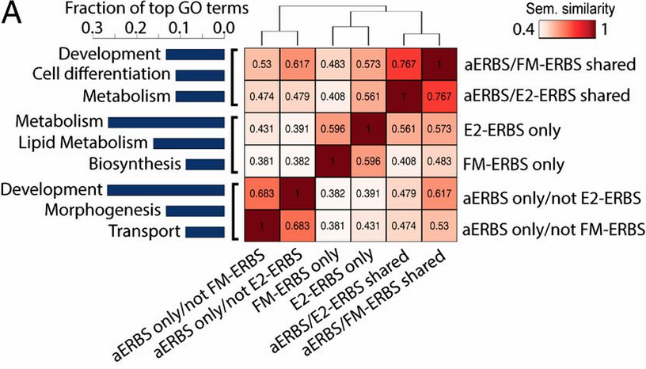

The semantic comparisons of Gene Ontology (GO) annotations provide quantitative ways to compute similarities between genes and gene groups, and have became important basis for many bioinformatics analysis approaches. GOSemSim is an R package for semantic similarity computation among GO terms, sets of GO terms, gene products and gene clusters. GOSemSim implemented five methods proposed by Resnik, Schlicker, Jiang, Lin and Wang respectively.
GOSemSim is released within the Bioconductor project and the source code is hosted on GitHub.
Author
Guangchuang Yu, School of Public Health, The University of Hong Kong.
Citation
Please cite the following article when using GOSemSim:


Yu G†, Li F†, Qin Y, Bo X*, Wu Y and Wang S*. GOSemSim: an R package for measuring semantic similarity among GO terms and gene products. Bioinformatics. 2010, 26(7):976-978.
Featured Articles

Find out more on Featured Articles.
Installation
Install GOSemSim is easy, follow the guide in the Bioconductor page:
## try http:// if https:// URLs are not supported
source("https://bioconductor.org/biocLite.R")
## biocLite("BiocUpgrade") ## you may need this
biocLite("GOSemSim")
Overview
Methods
- Information content based methods proposed by Resnik, Schlicker, Jiang and Lin
- Graph structure based method proposed by Wang
Combine methods for aggregating multiple GO terms
- max
- avg
- rcmax
- BMA
Functions
- goSim and mgoSim for measureing semantic similarity among GO terms
- geneSim and mgeneSim for measureing semantic similarity among genes
- clusterSim and mclusterSim for measureing semantic similarity among gene clusters
Supported organisms
- 20 species that have OrgDb available in Bioconductor
- Many other species with e GO annotation query online via AnnotationHub)
Find out details and examples on Documentation.
Related Tools
- clusterProfiler for Ontologies/pathways enrichment analyses
- DOSE for Disease Ontology Semantic and Enrichment analyses
Find out more on projects.
Projects that depend on GOSemSim
CRAN packages
- BiSEp: Toolkit to Identify Candidate Synthetic Lethality
- LANDD: Liquid Association for Network Dynamics Detection
- ppiPre: Predict Protein-Protein Interactions Based on Functional and
Bioconductor packages
- clusterProfiler: statistical analysis and visualization of functional profiles for genes and gene clusters
- DOSE: Disease Ontology Semantic and Enrichment analysis
- meshes: MeSH Enrichment and Semantic analyses
- Rcpi: Toolkit for Compound-Protein Interaction in Drug Discovery
- tRanslatome: Comparison between multiple levels of gene expression
Feedback
- Please make sure you follow the guide before posting any issue/question
- For bugs or feature requests, please post to github issue
- For user questions, please post to Bioconductor support site and Biostars. We are following every post tagged with GOSemSim
- Join the group chat on and